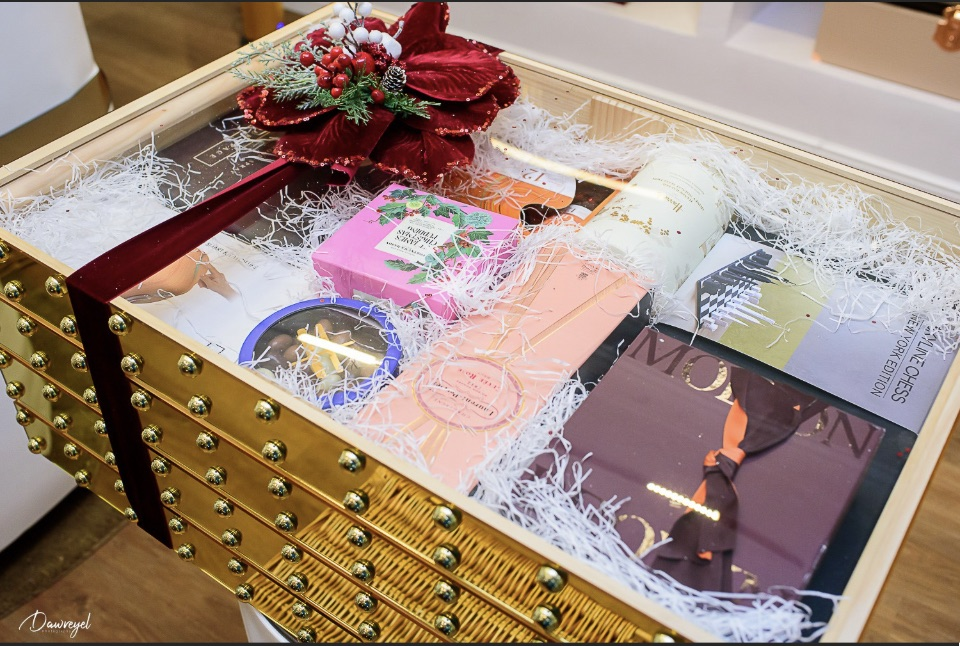
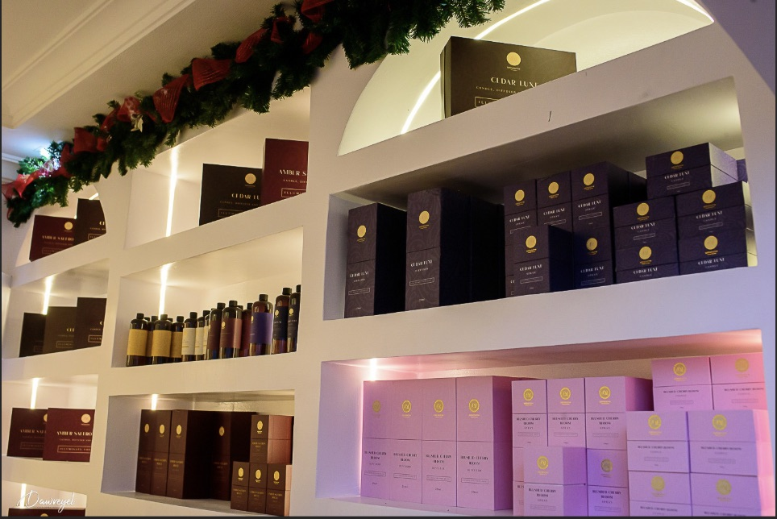
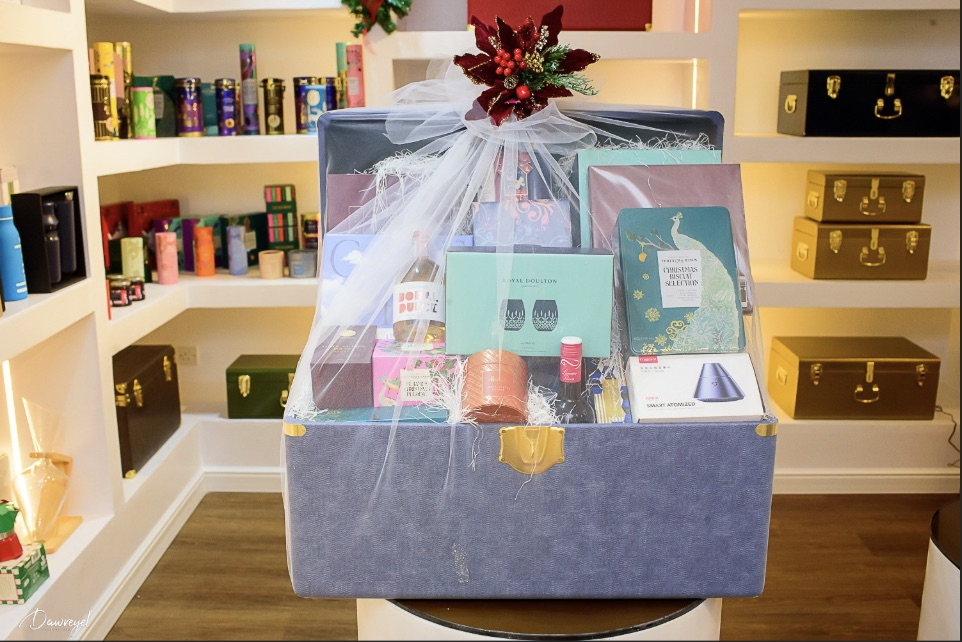
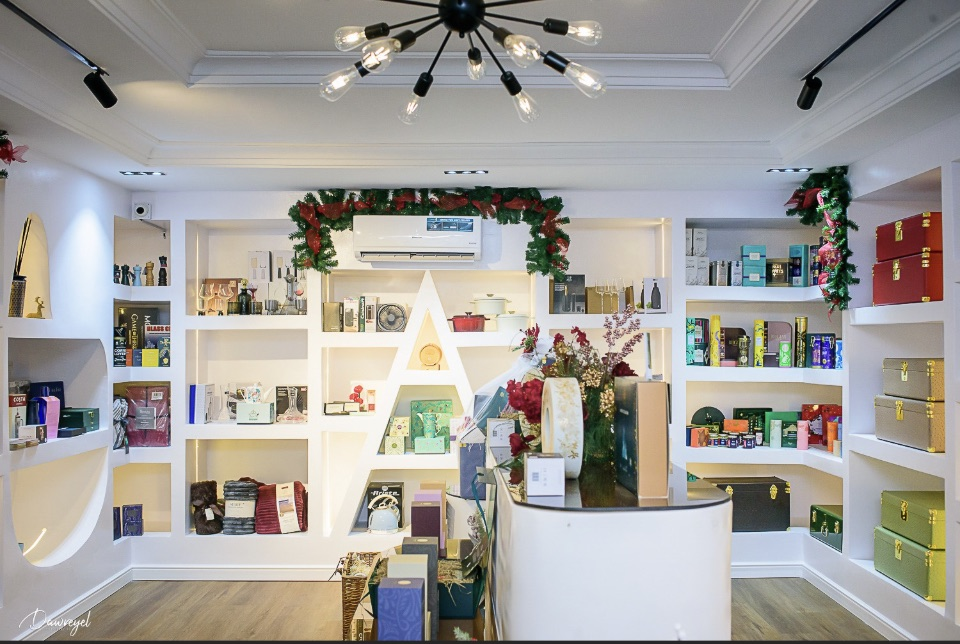
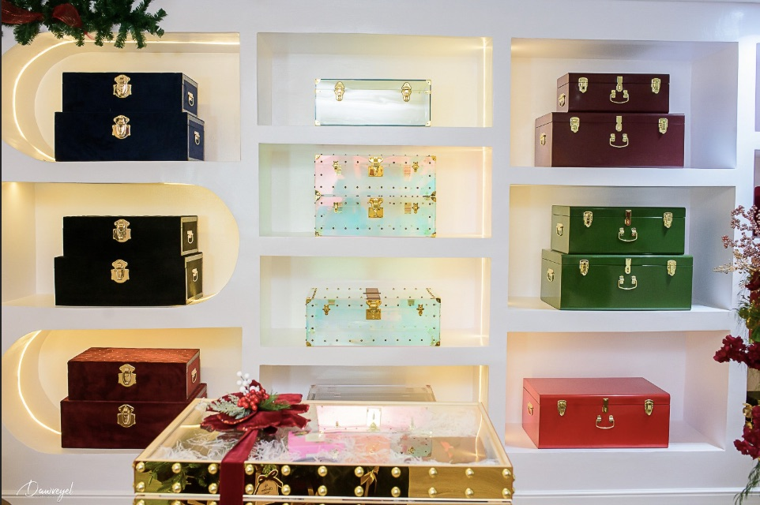

Christmas in Lagos comes with its own kind of excitement. The invitations start coming in, family members begin making travel plans, offices prepare for end-of-year celebrations and shopping lists somehow get longer every week. There are gifts to buy, homes to prepare and people to appreciate before the year comes to an end.
Whatever the occasion, finding the right gift takes a little thought. A beautiful gift should feel considered, suit the person receiving it and, ideally, be something they will enjoy long after Christmas.
Fortunately, Lagos has a growing selection of destinations catering to shoppers who appreciate quality, thoughtful presentation and distinctive lifestyle products. One of the latest additions to the city's luxury retail scene is Alexandrite Luxury Retail, which recently opened its doors in Lekki Phase 1, offering a carefully curated shopping experience for individuals and corporate clients.
If you are putting together your Christmas shopping list this year, here is a guide to finding luxury gifts, home essentials and bespoke gift boxes in Lagos, with Alexandrite Luxury Retail worth adding to your list of shopping destinations.
1. For the Person Who Has Everything: Choose a Gift They Would Not Necessarily Buy Themselves
We all know someone who seems to have everything. They have their favourite perfume, a wardrobe they have carefully put together and a home filled with things they love. Shopping for them can quickly become a challenge.
The trick is to look beyond what they already own and think about the little luxuries they might appreciate. A beautifully presented home fragrance, a scented candle or a carefully selected collection of lifestyle products can make a lovely Christmas gift.
Home fragrances are particularly good choices because they bring something personal into the recipient's everyday life. A well-chosen fragrance can become part of their morning routine, their evening wind-down or the atmosphere they create when entertaining guests.

You can also consider a curated gift box. Rather than choosing one item and hoping it is right, a collection of complementary products gives the recipient a little more to discover. The selection could include a home fragrance, a candle and other lifestyle essentials, depending on their preferences.
At Alexandrite Luxury Retail, the focus is on carefully curated luxury products and gifting solutions. Its 2026 Christmas Gift Box Collection offers an opportunity to find gifts for people who appreciate quality, thoughtful selections and good presentation.
For someone who enjoys the finer details, this is a more personal approach to Christmas gifting than picking up another generic gift set.
2. For a Home Ready for Christmas: Make Room for Beautiful Fragrances
Christmas in Lagos often means having people over. Friends drop by, relatives come visiting and the dining table becomes a meeting point for conversations that can stretch well into the evening.
Preparing your home for the season goes beyond putting up decorations and getting the guest room ready. The little details matter, too, and home fragrance is one of the easiest ways to make a space feel more welcoming.
A scented candle can add warmth to a living room, particularly during an evening gathering. Reed diffusers are useful for maintaining a consistent fragrance in spaces such as bedrooms, hallways and bathrooms. Room sprays offer a quick way to refresh a space before guests arrive, while scented hand washes and lotions can make guest bathrooms feel more considered.
When choosing home fragrances, think about the room and the atmosphere you want to create. A warm, woody fragrance might work beautifully in a living room, while a lighter floral or fruity scent could be more suitable for a bedroom or guest bathroom.
This is where Isibhahome, available at Alexandrite Luxury Retail, comes in.

The home fragrance collection includes scented candles, reed diffusers, room sprays, hand washes and lotions. Each offers a different way to bring fragrance into everyday living, whether you are refreshing your home for Christmas or looking for a gift for someone who enjoys a well-kept space.
Some of the fragrances to explore include:
- Amber Saffron Rouge: A distinctive option for anyone drawn to warm, rich fragrance profiles.
- Cedar Luxe: Worth considering for those who appreciate woody fragrance notes.
- Velvet Rum and Orchid: An option for shoppers looking for a fragrance with a more distinctive character.
- Blushed Cherry Bloom: A lovely choice for someone who enjoys fruity and floral fragrance profiles.
- Cedar Groove Morning: Another option to explore if woody fragrances are more their style.
You can choose a fragrance based on the recipient's preferences or select a few complementary products to create a more complete gift.
For anyone looking to shop for home fragrances in Lagos this Christmas, Isibhahome offers a good starting point for gifts that can also become part of someone's everyday home routine.
3. For Corporate Christmas Gifting: Give Your Business Relationships Some Thought
For businesses, Christmas is an opportunity to appreciate the people who have contributed to the year's progress.
Clients, employees, business partners and other important stakeholders all play a role in keeping an organisation moving. A thoughtful Christmas gift is one way to recognise those relationships and end the year on a positive note.
However, corporate Christmas gifting requires a little more planning than buying gifts for friends and family.
The first consideration is the recipient. A gift for a long-standing client might require a different approach from one intended for employees or business partners. The selection should feel appropriate, useful and consistent with how the organisation wants to present itself.
Presentation also matters. A well-selected gift in thoughtful packaging creates a better experience for the recipient. Personalisation can make the gesture even more meaningful, particularly when the gift includes the company's branding or a message prepared for the occasion.
This is why bespoke corporate gifting has become an important consideration for businesses planning their end-of-year appreciation.

Alexandrite Luxury Retail caters to this need through its 2026 Christmas Gift Box Collection, which is available to both private and corporate clients. Businesses can explore bespoke gift selections, with opportunities for personalised corporate branding to reflect their identity.
Depending on the recipients and the company's budget, gift boxes can incorporate products such as Isibhahome scented candles, reed diffusers, room sprays, hand washes and lotions.
For example, a company looking to appreciate a long-standing client might opt for a thoughtfully arranged selection of home fragrance products. An employee appreciation box could feature a combination of everyday lifestyle essentials, while a more personalised selection could be prepared for senior business partners.
The advantage of a bespoke approach is that businesses can consider the people receiving the gifts rather than settling for a one-size-fits-all option.
For organisations planning corporate Christmas gifts in Nigeria, it is worth starting early. This allows enough time to discuss quantities, product selections, branding, packaging and delivery arrangements, especially when preparing gifts for a large group of recipients.
4. For the Last-Minute Luxury Shopper: Find More of What You Need in One Place
There is always that one person who starts Christmas shopping in November and another who somehow gets to the middle of December without buying a single gift.
If you fall into the second category, you already know how quickly shopping can become stressful. You have to think about what everyone wants, where to find it, how long delivery will take and whether the gift will arrive in time.
In Lagos, moving between different shopping destinations can also take up a significant part of the day, particularly during the festive season when traffic and busy shopping centres become part of the experience.
A curated luxury retail destination makes the process easier by bringing different gifting options together.

At Alexandrite Luxury Retail, shoppers can explore lifestyle products, home fragrances and bespoke gifting solutions. This gives individuals looking for Christmas gifts a starting point for different occasions without having to build their entire shopping list around a single product category.
You could be shopping for a friend who loves home fragrances, a relative who appreciates beautiful lifestyle products or a colleague you want to surprise with something thoughtful. The Christmas Gift Box Collection also provides an option for anyone who prefers a ready-made selection or wants to explore a more personalised arrangement.
For last-minute shoppers, the most useful thing is to have a clear idea of what they need before making a purchase. Consider the recipient, your budget and whether you need a single gift or several boxes. If you are considering a bespoke selection, contact the retailer early to discuss availability and preparation timelines.
A little planning can save you several trips across the city.
What to Consider Before Buying Luxury Christmas Gifts
Luxury gifting is often associated with expensive purchases, but a good gift is ultimately about the thought behind the selection. Before making your Christmas purchases, there are a few things worth considering.
Think about the recipient's lifestyle. A home fragrance enthusiast might appreciate a scented candle or reed diffuser, while someone who enjoys entertaining could enjoy a selection of home essentials. Consider what the person actually uses and enjoys.
Pay attention to fragrance preferences. Fragrance is personal. If you are buying candles, diffusers or room sprays, consider whether the recipient prefers woody, warm, floral or fruity scents. When in doubt, explore options before settling on a particular fragrance.
Consider presentation. Packaging contributes to the overall gifting experience. A thoughtfully arranged gift box can make even everyday essentials feel special. For corporate gifting, personalised branding can also help make the gesture more memorable.
Plan around your budget and timeline. Decide how much you want to spend before shopping. If you are ordering multiple gifts or requesting personalised boxes, give yourself enough time for selections and preparation.
These considerations make it easier to find gifts that feel appropriate for the occasion and the person receiving them.

Make Alexandrite Part of Your Christmas Shopping Plans
Christmas shopping should be an enjoyable part of the festive season. There is something satisfying about finding a gift that feels right, knowing that the person receiving it will appreciate the thought behind it.
For individuals, Alexandrite Luxury Retail offers a selection of luxury lifestyle products, home fragrances and curated gifting options worth exploring this Christmas. Its 2026 Christmas Gift Box Collection also provides an opportunity to put together thoughtful gifts for friends, family and other important people.
For businesses, the bespoke corporate gifting service offers room to create personalised selections that reflect the organisation and the relationships it wants to appreciate.
And if your plans for Christmas include refreshing your home, the Isibhahome collection offers scented candles, reed diffusers, room sprays, hand washes and lotions to help make everyday spaces feel more inviting.
As the festive season approaches, there is plenty to think about. Start with your shopping list, consider the people you are buying for and explore the options available.
If you are looking for luxury gifts in Lagos or planning your corporate Christmas gifting for 2026, Alexandrite Luxury Retail is a destination worth considering. Visit the store at 27B Itumo Ogbonna Road, Lekki Phase 1, Lagos.